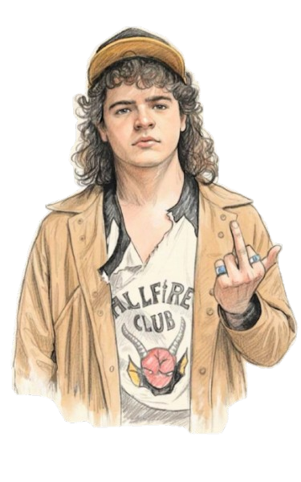

Dragon Fly
Sorcerer


Dustin Henderson: Dragon-Fly
The intellectual glue of the party, Dustin Henderson is a brilliant strategist with a
penchant for science and gadgets. As Dragon-Fly, he serves as the team's aerial scout and
communications expert, often using his Cerebro radio to navigate the unseen.
His quick wit and bond with Dart make him uniquely capable of understanding the Upside Down's
biology. He isn't just a nerd; he’s the high-tech navigator guiding his friends through the
dark.
Let's Fight